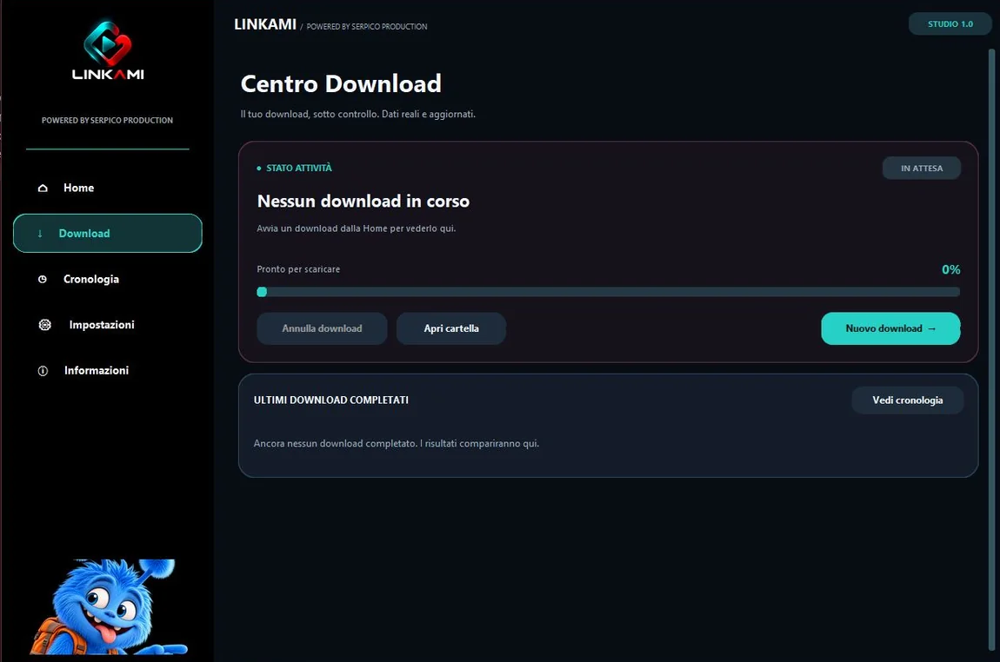

▶
Video MP4
Seleziona il formato video e la qualità disponibile per salvare contenuti supportati.
Formato MP4 ↗Incolla il link, scegli MP4 o MP3 e gestisci i tuoi download da un'interfaccia semplice, moderna e pensata per il PC.
Una sola schermata per scegliere cosa scaricare, dove salvarlo e seguire l'avanzamento.
Seleziona il formato video e la qualità disponibile per salvare contenuti supportati.
Formato MP4 ↗Quando ti serve soltanto l'audio, scegli MP3 e avvia la conversione del contenuto consentito.
Formato MP3 ↗Controlla lo stato del download, scegli la cartella e consulta la cronologia dei file completati.
Cronologia e avanzamento ↗LINKAMI mantiene i passaggi essenziali ben visibili: link, formato, destinazione e stato del download. Il tutto accompagnato dalla sua mascotte.
Guarda come si usa
Anteprima reale dell'interfaccia WindowsInserisci l'indirizzo di un contenuto che hai diritto di scaricare.
Video MP4 o Audio MP3: scegli il formato e le opzioni disponibili.
Premi “Scarica ora” e segui l'avanzamento fino al salvataggio.
Scarica il pacchetto, estrai lo ZIP e apri LINKAMI_Setup.exe per installare il programma sul tuo PC.
↓ Scarica LINKAMI per Windows ↗Il programma è stato preparato per Windows 10 e 11. Verifica sempre il funzionamento sulla configurazione del tuo computer.
Scarica lo ZIP, estrailo in una cartella e avvia LINKAMI_Setup.exe. Segui i passaggi dell'installazione guidata.
No. Utilizza LINKAMI soltanto per contenuti che hai diritto di scaricare, rispettando il diritto d'autore e le condizioni dei servizi utilizzati. Il supporto ai siti può variare.